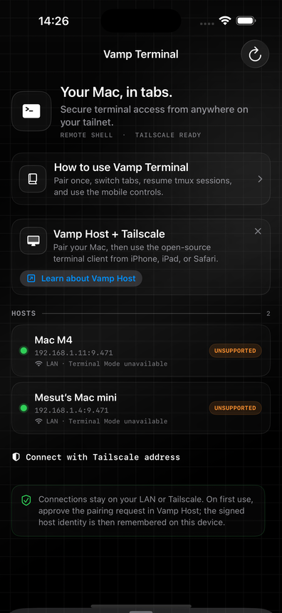

Live tabs, real shells
Each tab owns an independent PTY. Switching visibility never closes and reopens the process underneath.
Vamp Terminal is a focused iPhone and iPad terminal for Vamp Host. Keep eight independent shells alive, switch instantly, and take your command line with you.
Vamp Terminal is designed around the moments that usually make an iPhone terminal frustrating: tiny controls, lost sessions, and tabs that secretly restart.
Each tab owns an independent PTY. Switching visibility never closes and reopens the process underneath.
Readable SwiftTerm output, scrollback, resize handling, paste, arrows, Ctrl, Esc, Tab, and a quick-key row.
Attach tmux or screen from the app, or launch Claude Code, Codex CLI, Aider, and OpenCode in their own tabs.
Vamp Host includes a terminal-only browser surface styled like a task chat. It runs on loopback and is exposed through Tailscale Serve, so the Mac never opens a public HTTP listener.
tailscale serve --bg http://127.0.0.1:9475Vamp Host. Terminal Mode is on.tmux attach -t workUse the original Vamp Host when you want remote desktop plus terminal access, or install the smaller terminal-only host when that is all the Mac should expose.
Remote display, input, and Terminal Mode in one host. Terminal Mode is explicit and supports up to eight tabs for the Vamp Terminal client.
Download full host ↗A focused companion with terminal sessions, Safari control, pairing, Tailscale discovery, and no screen-capture or remote-input surface.
Download light host ↗Dependency-free Python host with eight PTYs per browser connection. Keep it on loopback and expose it with Tailscale Serve for Safari access.
Run on Linux ↗The CLI is friendly to scripts and coding agents. Start a persistent tmux session on the host, then attach from a tab without restarting the process.
vamp ensureStart Vamp Host and wait until it is ready.vamp status --jsonRead machine-friendly host state.vamp terminal listList tmux and screen sessions.vamp terminal start --session workCreate or resume a persistent shell.vamp terminal attach workAttach the named session from a tab.vamp terminal agent codex --session codexLaunch an agent-backed session.vamp browser serveExpose the loopback Safari workspace through Tailscale.vamp-terminal-host statusCheck the terminal-only macOS host.Vamp does not own your agent account or prompt. It gives Claude Code, Codex CLI, Aider, and OpenCode a stable PTY inside tmux so the client can reconnect to the same work.
vamp terminal agent claude --session claudeThe app uses a neutral transparent-glass system that adapts to light, dark, Dynamic Type, reduced motion, and iPad layouts.

Tabs remain mounted in a stable workspace. A dot shows connection state; a quiet indicator tells you when a background tab has new output.
The built-in guide explains pairing, tabs, clipboard, keyboard controls, tmux handoff, and agent launchers with visuals instead of a wall of setup text.

When the phone app is not installed, open the private Tailscale URL and work from the same tabbed terminal model with approval cards and clipboard controls.
Commands cross an explicit approval boundary, then stream output into the same tab. This local demo shows the browser and mobile interaction without touching a host.
$ git pull --ff-only No output yet.
Interactive preview only — no command is sent to your Mac.

The project publishes an unsigned, device-only IPA. AltStore re-signs it with the Apple ID configured on your device.
Get the latest Vamp Terminal IPA from Releases, or build it locally with Xcode.
dist/VampTerminal/*.ipaCheck the adjacent SHA-256 file before importing a build.
shasum -a 256 -c *.ipa.sha256In AltStore, choose + → Sideload IPA and let it sign the app.
AltStore → + → Sideload IPAEnable Terminal Mode on Vamp Host, approve the pairing request, and connect.
LAN or TailscaleShells are intentionally fresh per connection. For long-running work, use tmux or screen and reattach from a new mobile or Safari tab when you come back.
tmux new-session -A -s workVamp Terminal is a focused client. The rest of the project stays open for inspection, automation, and contribution.
Read the code, report a bug, or propose a better terminal workflow.
Pair the browser workspace and expose it through Tailscale Serve.
Use the host CLI safely with tmux-backed agents and approval boundaries.